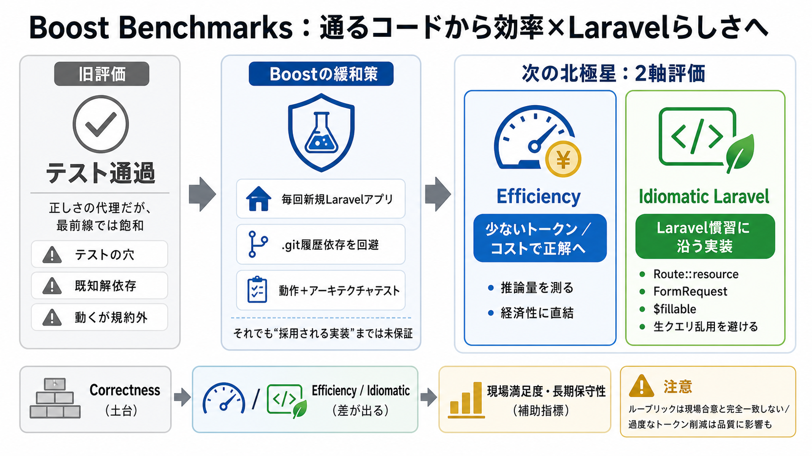

Best AI Coding Tools for Laravel Developers in 2026 - DEV Community
The Laravel team's Boost Benchmarks tested six AI models against real Laravel problems. They evaluated PHP fluency, conv…

AIコーディング評価は「テストを通す」だけでは差が出なくなり、効率（トークン/コスト）とLaravelらしさ（イディオマティック）へ移っています。
最前線モデルはタスクの多くでPestテストをほぼ確実に通せるため、「合格するか」だけでは進歩が測りにくくなりました。
テストが通っても、テストの穴・既知解探索（履歴参照）・規約に反する“動く実装”などで、現場の良さを保証しません。
Boostは毎回新規Laravelアプリから開始し、.git履歴への依存を避け、アーキテクチャテストも併用してリスクを低減しています。
Boostが見ているのは「動く」だけでなく、レビューでマージされる“Laravelに属する”コードです。
次の主戦場は2つです：効率（正解までのトークン/コスト）と、イディオマティック（Laravelらしさ）。
正しく動くコードでも、必要な推論量（トークン）や試行のコストが桁違いになり得ます。効率を測ることで“なるべく少ない情報で解く力”を評価できます。
テスト通過でも、生クエリ乱用やRoute::resourceを無視、フォームリクエスト不使用、$fillable軽視などはチームで好まれにくい領域です。
BoostはLaravelベストプラクティスに基づく具体的で検査可能な観点（ルーブリック）を重ね、単に通すだけの“ゲーム”を難しくします。
既存17評価を回帰テスト基盤として残し、主要メトリクスを「トークン/コスト」「イディオマティック」に前面化。さらにコンテキスト締め込みも強化します。
Correctnessは土台のまま、次はEfficiencyとIdiomatic Laravelが差を生む領域になります。
イディオマティック評価はルーブリック化されても、現場の合意と完全一致する保証はありません。さらに「トークン削減＝常に良い」も副作用があり得ます。
回帰スイートを残しつつ新レイヤーを段階追加する姿勢は堅実です。今後は効率・規約に加え、現場の満足度や長期保守性も補助指標として併走させるのが重要になります。
The Laravel team's Boost Benchmarks tested six AI models against real Laravel problems. They evaluated PHP fluency, conv…
pattern, LLMs stop guessing and start generating that sweet sweet code. The Laravel team clearly sees this. They've just…
We also observed that enabling Boost can add token, context, and sometimes time overhead. Since agents make MCP calls to…
Sure, it’s still early and there’s plenty of room for it to grow. But even now, it already saves time, produces cleaner …
Laravel Boost, released by the Laravel team in 2025, is the standout. It runs as a Model Context Protocol server and fee…